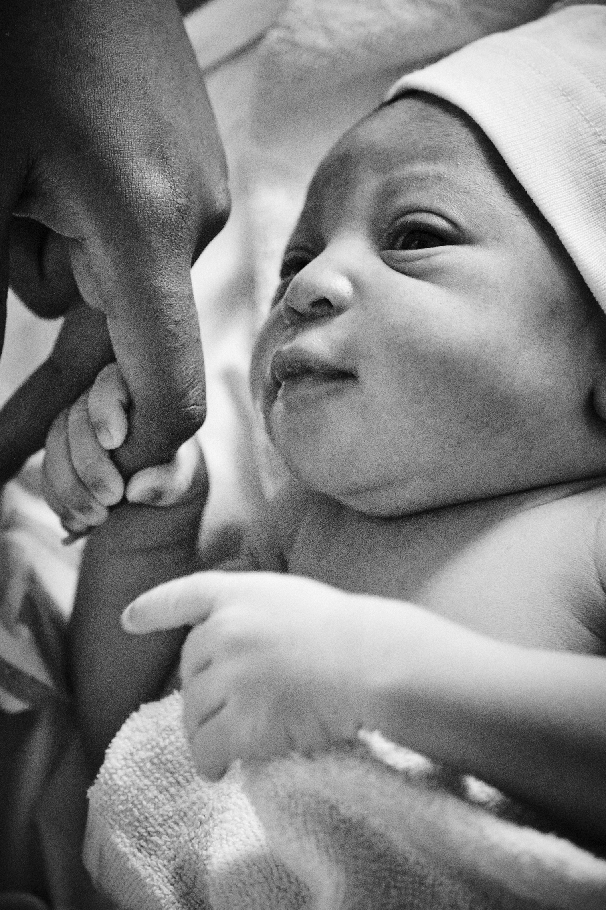
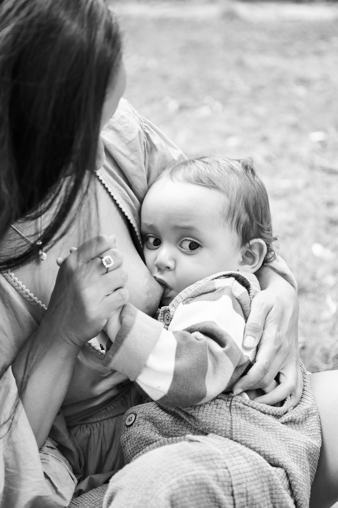

What's a doula?
A doula or Mütterpflegerin is a non-medical, holistic companion who can support you physically and emotionally throughout pregnancy, childbirth, and the postpartum.
How will I support you?
I will meet you and your family a few times before the birth of your baby, provide you with educational resources, show you exercises and tips to relieve discomfort during labour with breathing, massage and relaxation. I will explain how to involve your partner so they can be a great birth partner.
From week 37, I am on-call 24/7. I will join you at home when labor starts, accompany you to your chosen birth location, and stay until you and your baby are settled.
Once you are home, I'll visit to help with immediate questions and debrief your birth experience. I offer emotional support, baby care, gentle massages, and practical household help—like cooking, laundry, or holding the baby while you rest or submit your Elterngeld form.
You can choose support for the prenatal, birth, or postpartum period based on your needs. See my packages below!
Doula packages

Prenatal & Birth

Prenatal & Postpartum

Post-Partum

Prenatal, Birth & Postpartum

Photography
Am I covered by health insurance?
Under certain conditions — such as complications during or after the birth, or of the infant's health, or difficult situations (caesarean birth, feeding problems, twin babies, depression) — your physician can prescribe postpartum support under the name of Haushaltshilfe (household help), which may be covered by your Krankenkasse. I will take over some household chores, help you with your baby to give you time to rest, and support you emotionally. Postpartum support can range from 2 to 8 hours per day for 2 or more weeks, depending on the agreement given by your health insurance.
The impact of a doula support*
* Data from a landmark Cochrane review of over 15,000 births.
Read the full articleI cannot thank Julie enough for her incredible support during my entire labor process. My husband and I met Julie for the first time that night when my contractions started to become more intense in the hospital and she did not waste any second and gave me the warmest and most hands-on support I could ever have from a doula. She helped soothe my pain by giving me the nicest massages and also talking to me and telling me the most encouraging words while also assisting my husband the entire time. She really really made me feel safe and we could not thank her enough for helping us go through our first birth/labor experience. She is super professional and it didn't feel like we had a doula there but more like a close friend. She gave us that warm/family-like feeling. Another plus is that she's a photographer and she took the most amazing first photos of our little family. Julie, our utmost thanks to you for taking care of me! Wish all mummies-to-be can experience your wonderful service! God bless always.Grace, Indy & baby Veer
Everyone is welcome
I offer inclusive support to all families and communities.
I would love to hear from you!
Thanks for reaching out! I'll be in touch soon.